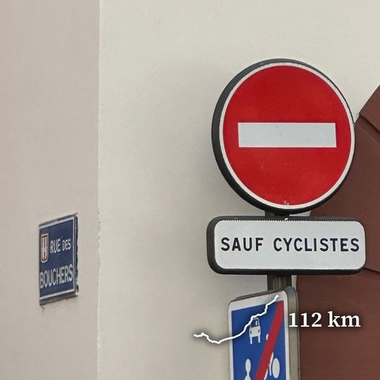
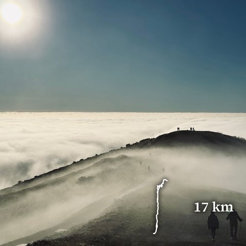
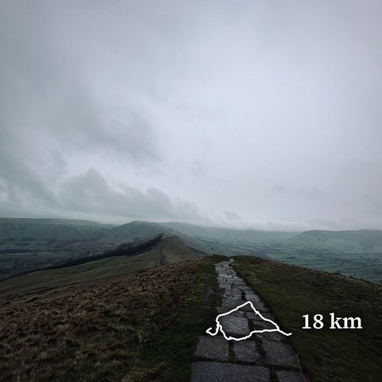
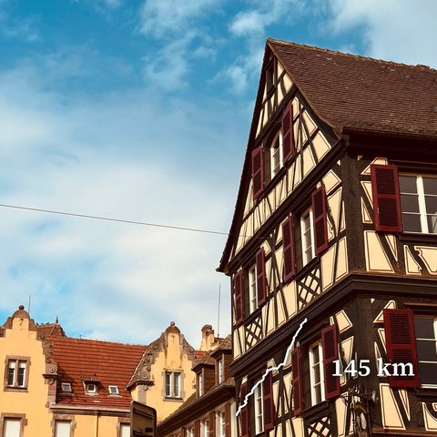
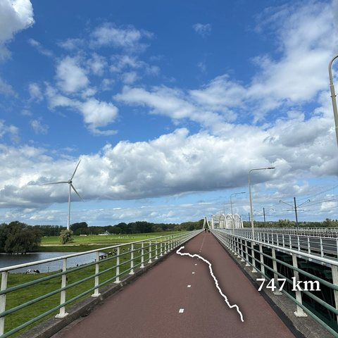
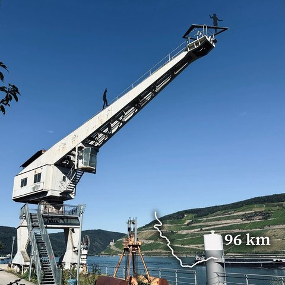
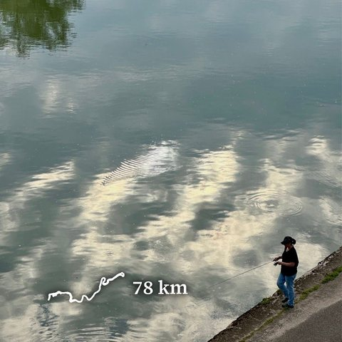
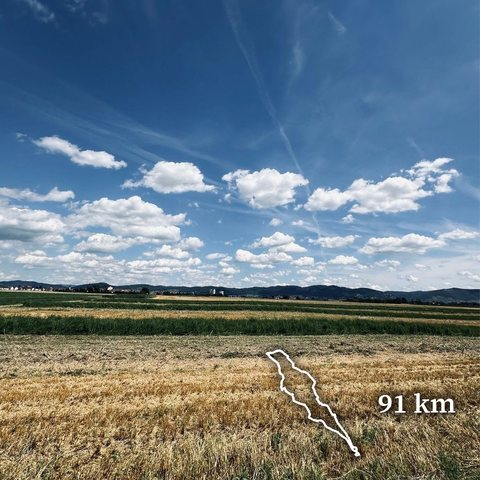
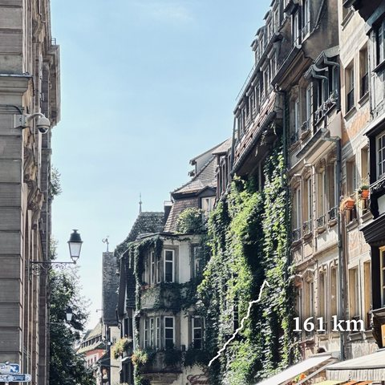

Random selection of routes I find beautiful.

Saarbacherhammer Bike · from Heidelberg · Aug 2025
The Great Malverns Hike · Malvern Hills · Dec 2024
Mam Tor ridges Hike · Peak District · Dec 2024
Straßburg 2.0 Bike · from Heidelberg · Sep 2024
Amsterdam Bike · from Heidelberg · Aug 2024
Koblenz–Mainz Bike · Rhine gorge · Aug 2024
Neckar Bike · Neckar valley · Aug 2024
Worms Bike · from Heidelberg · Jul 2024
Straßburg 1.0 Bike · from Heidelberg · Mar 2024